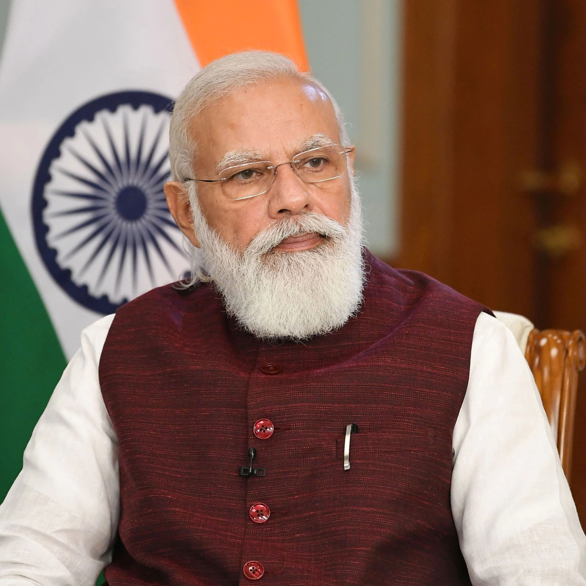

Narendra Modi

Narendra Damodardas Modi (Gujarati: [ˈnəɾendɾə dɑmodəɾˈdɑs ˈmodiː] (listen); born 17 September 1950)[b] is an Indian politician serving as the 14th and current Prime Minister of India since 2014. Modi was the Chief Minister of Gujarat from 2001 to 2014 and is the Member of Parliament from Varanasi. He is a member of the Bharatiya Janata Party (BJP) and of the Rashtriya Swayamsevak Sangh (RSS), a right-wing Hindu nationalist paramilitary volunteer organisation. He is the longest serving prime minister from outside the Indian National Congress.
Modi was born and raised in Vadnagar in northeastern Gujarat, where he completed his secondary education. He was introduced to the RSS at age eight. He has reminisced about helping out after school at his father's tea stall at the Vadnagar railway station. At age 18, Modi was married to Jashodaben Chimanlal Modi, whom he abandoned soon after. He first publicly acknowledged her as his wife more than four decades later when required to do so by Indian law, but has made no contact with her since. Modi has asserted he had travelled in northern India for two years after leaving his parental home, visiting a number of religious centres, but few details of his travels have emerged. Upon his return to Gujarat in 1971, he became a full-time worker for the RSS. After the state of emergency was declared by prime minister Indira Gandhi in 1975, Modi went into hiding. The RSS assigned him to the BJP in 1985 and he held several positions within the party hierarchy until 2001, rising to the rank of general secretary.[c]
Modi was appointed Chief Minister of Gujarat in 2001 due to Keshubhai Patel's failing health and poor public image following the earthquake in Bhuj. Modi was elected to the legislative assembly soon after. His administration has been considered complicit in the 2002 Gujarat riots in which 1044 people were killed, three-quarters of whom were Muslim,[d] or otherwise criticised for its management of the crisis. A Special Investigation Team appointed by the Supreme Court of India found no evidence to initiate prosecution proceedings against Modi personally.[e] While his policies as chief minister—credited with encouraging economic growth—have received praise, his administration was criticised for failing to significantly improve health, poverty and education indices in the state.[f]